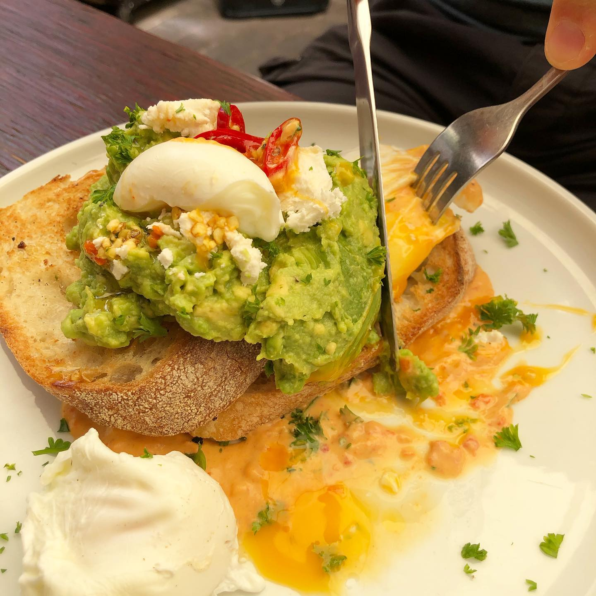

Hello ☀️day! We escaped from a bit Coronavirus-paranoid Singapore to sunny Perth with its awesome breakfasts and coffee 🤤: corn, kale & quinoa fritter with poached eggs, roast capsicum hummus, sautéed kale, spiced pumpkin, seeds & grain, smashed avocado 🥑 on sourdough toast and affogato (espresso with ice cream) - all these was so good @holmesandco ! What are you guys up to this weekend? #perth #brunch #breakfast #healthybreakfast #eatingout #coronavirus #nopanic #singapore #swimbikerun #ironmantri #triathlontraining #feedfeed #foodblogfeed #instafoodie #instafoodgram
2020-02-09 11:53:35
Back to main page